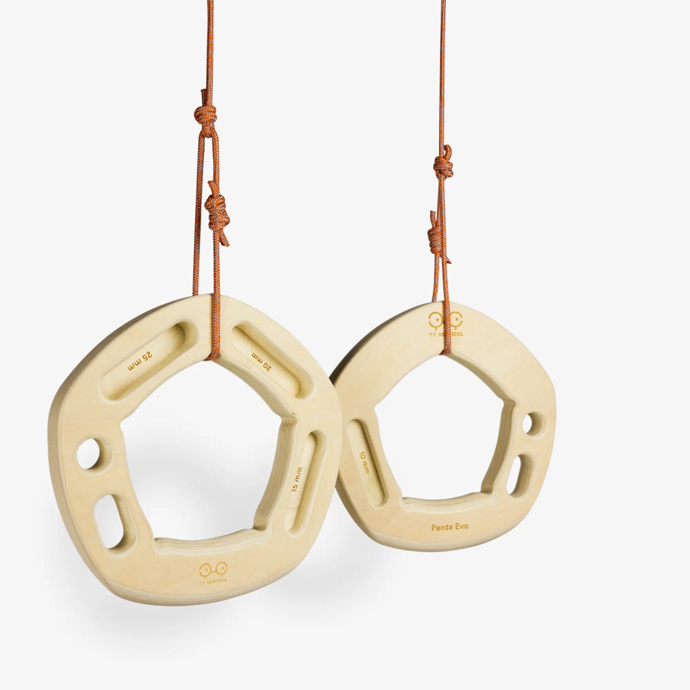
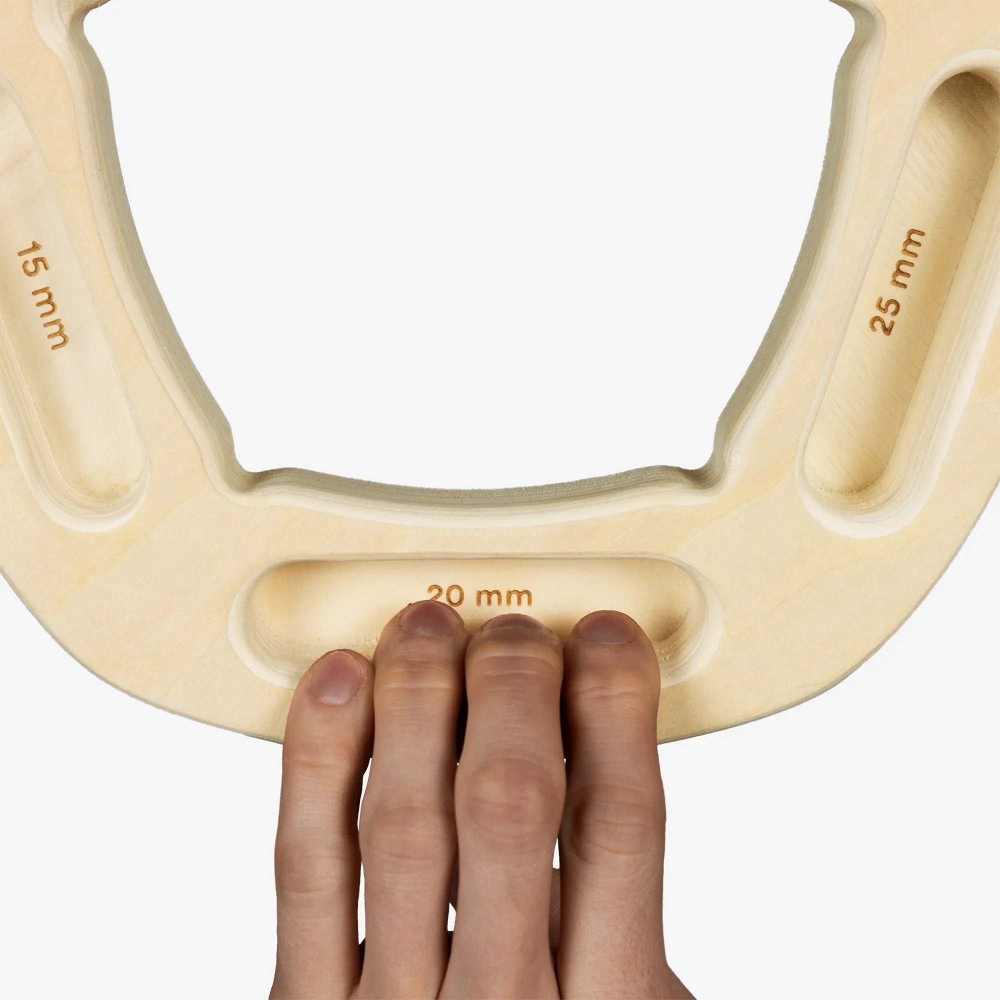

yy-penta-evo
Two byte-exact approved originals show front/reverse of one asymmetric unit and close-up rounded recesses. Seven slots map to 14 contacts through two identical unreflected instances. Two strands wrap the upper band through the existing central opening; there is no evidence for a small hidden channel. Exact original binary URLs remain unknown; the product page is a reference URL only.
Source packet; historical exact set reused. No CAD geometry authored.
1. yy-penta-evo-front-reverse.webp

YY Vertical source
PE-RESTORED full front/reverse original: two exterior strands around top band and through central ring; binary URL unknown, product URL is reference only
SHA-256 83b95adc297d634659654f6f27bb43ebae1c53b171b747568ac5e022754e6571
approved exact set in batch-04 design
2. yy-penta-evo-close-up.webp

YY Vertical source
PE-RESTORED intact close-up original: uninterrupted lower band and retaining concavities; binary URL unknown, product URL is reference only
SHA-256 1107039ef6d2877cd68a293683c72ec93f3166633199d45484f58c13b48aa2fc
approved exact set in batch-04 design